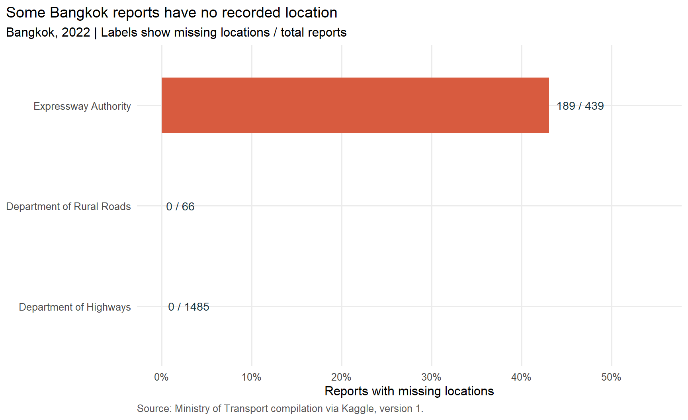
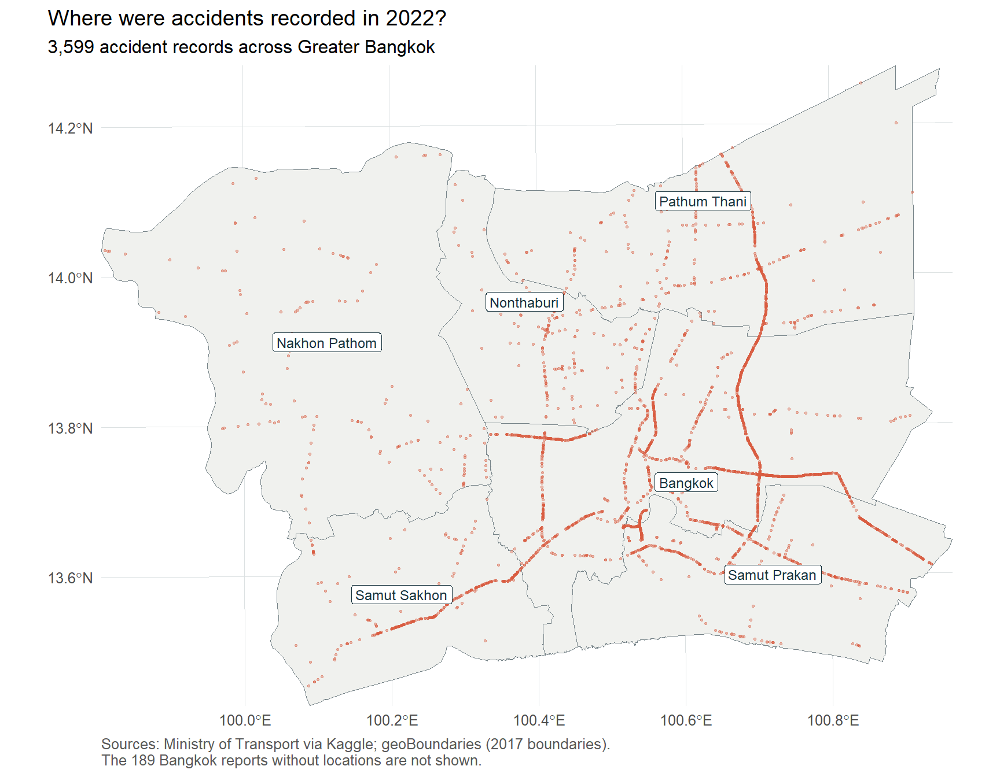
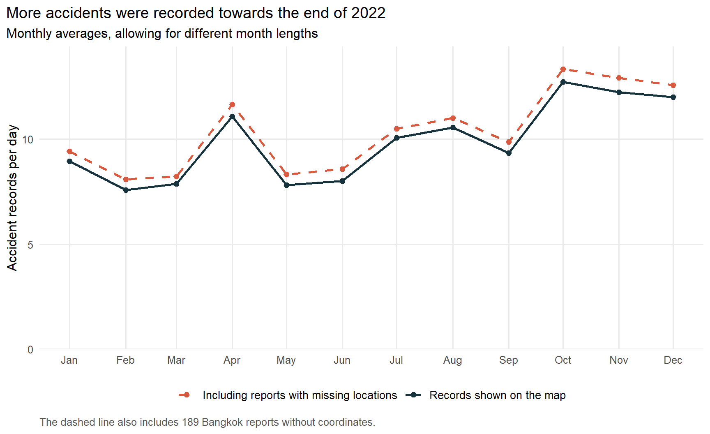

| Records | Number |
|---|---|
| All years in the downloaded file | 81,735 |
| From 2022 | 21,032 |
| From 2022, with usable locations | 20,843 |
| Inside Greater Bangkok | 3,599 |
Where were road accidents recorded in Greater Bangkok, and were there more at certain times of the year? I use the 2022 accident records to look at these patterns, starting with a check of the data.
1. What I want to find out
I chose Greater Bangkok because it lets me look at the city together with its surrounding provinces. The 2022 data cover a full calendar year, so I can compare different months within the same period.
There are three questions I want to explore:
- Where were most accidents recorded?
- Which months had more accidents?
- Could missing locations change what the maps and charts show?
I start by checking which records can be used, then look at the locations and timing. A high accident count is a reason to look more closely at an area, but it does not tell us how dangerous it is without knowing how many people travel there.
2. The data
| Data | What I use it for |
|---|---|
| Thailand Road Accident 2019–2022 | Accident locations and dates. I use only the records from 2022. Each record describes a reported accident, rather than an individual vehicle or casualty. |
| Thailand provincial boundaries | Defining the study area and placing accidents within its provinces. These boundaries represent 2017. |
Both datasets were downloaded on 11 September 2026. The accident data come from a compilation of Ministry of Transport records covering highways, rural roads and expressways. They do not cover every accident on every local street. Source: Ministry of Transport.
Here, Greater Bangkok means Bangkok, Nonthaburi, Pathum Thani, Nakhon Pathom, Samut Prakan and Samut Sakhon, following the National Statistical Office’s Bangkok and Vicinities grouping.
I use the date the accident happened, from 1 January to 31 December 2022, rather than the date the report was submitted. I treat the recorded times as local Thai time, although the source does not state the time zone.
3. Checking the records
First, I kept the 2022 records. I then checked their dates and locations, removed records that could not be placed on a map, and kept those inside the six provinces.
This leaves 3,599 accident records for the map. All the dates could be read, and there were no completely duplicated records.
3.1 Missing locations
There are 189 records without coordinates. All are listed as accidents in Bangkok. I checked which agency reported them to see whether the missing locations were spread across the data.

All 189 came from the Expressway Authority. They make up 43.1% of its 439 Bangkok reports, compared with no missing locations in the other two agencies’ Bangkok records. This means the map leaves out a substantial part of the Expressway Authority’s reports. I keep these records for the monthly comparison because their dates are still available, but cannot place them on the map.
3.2 Repeated or conflicting locations
Some records share the same location. This can happen when several accidents occur at the same place, so I keep them. Two pairs also share the same accident time but have different record numbers. They may be duplicate reports; the available information is not enough to decide, so they remain in the data.
A few records have coordinates that disagree with their province names. I use their plotted locations to decide whether they belong in the study area. This excludes four records listed under the six provinces and includes ten listed elsewhere. The boundary data are older than the accident records, so I cannot assume every disagreement is a recording error.
4. Where were accidents recorded?
With the records checked, I can look at their locations. Each dot below represents an accident record. Records at the same location overlap, so the dots alone do not show every repeated accident.

The dots follow several long routes through Bangkok and towards the surrounding provinces. This fits the dataset’s focus on highways, rural roads and expressways. Bangkok has the largest number of mapped records, followed by Samut Prakan. Areas with fewer dots should not automatically be seen as safer: some roads may be outside this reporting system, and we do not know how much traffic each road carries.
| Province | Accident records | Share (%) |
|---|---|---|
| Bangkok | 1802 | 50.1 |
| Samut Prakan | 671 | 18.6 |
| Pathum Thani | 491 | 13.6 |
| Samut Sakhon | 323 | 9.0 |
| Nonthaburi | 174 | 4.8 |
| Nakhon Pathom | 138 | 3.8 |
Bangkok accounts for 1,802 records, about half of those on the map. Samut Prakan follows with 671. These counts use the recorded coordinates to assign each accident to a province.
5. When were more accidents recorded?
After looking at where accidents happened, I compare their timing. Simply comparing monthly totals would give longer months more days to accumulate accidents. I therefore divide each month’s total by its number of days.
The solid line uses the records shown on the map. The dashed line adds the 189 reports with missing locations. Their province names place them in Bangkok, although I cannot check their exact positions.

October has the highest count: 394 mapped records, or about 12.7 per day. November has fewer records than December, but more per day because it is a shorter month. April also stands out compared with March and May.
Adding the reports with missing locations raises the figures slightly but leaves the same broad pattern: more accidents were recorded towards the end of the year. The location gaps therefore do not explain that increase on their own. The chart does not tell us whether changes in traffic, road conditions or reporting caused it.